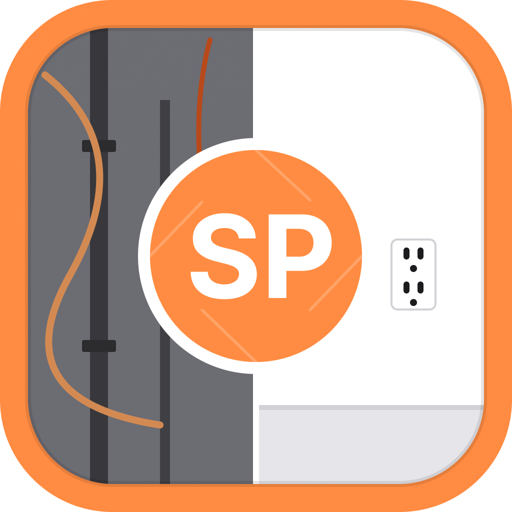

English — This page contains the privacy policy in English, followed by French, Spanish, German, Portuguese, Japanese, Polish, Russian, Indonesian, Filipino, and Thai translations.
Français — Une version française suit la version anglaise.
Español — Una versión en español sigue a la versión en inglés.
Deutsch — Eine deutsche Version folgt der englischen Version.
Português — A versão em português encontra-se a seguir à versão em inglês.
日本語 — 日本語版は英語版の後に続きます。
Polski — Wersja polska znajduje się po wersji angielskiej.
Русский — Русская версия следует за английской версией.
Bahasa Indonesia — Versi Bahasa Indonesia mengikuti versi bahasa Inggris.
Filipino — Sumusunod ang bersyong Filipino pagkatapos ng bersyong Ingles.
ไทย — เวอร์ชันภาษาไทยอยู่ถัดจากเวอร์ชันภาษาอังกฤษ
Last updated: November 2026
SiteProof ("the app") is designed to respect your privacy. This Privacy Policy explains what information is collected and how it is used.
SiteProof does not require you to create an account. You can use the app fully without providing any personal information.
All data created in SiteProof is stored locally on your device, including:
This data is not transmitted to any server and remains under your control.
SiteProof does not upload your data to the cloud. The app does not operate any backend servers or remote databases.
The one exception is the cryptographic signing key described in Section 7: if you use iCloud Keychain, iOS also keeps a copy of that key there. iCloud Keychain is Apple's service, tied to your own Apple Account and end-to-end encrypted. We have no access to it.
To understand how the app is used and to diagnose problems, SiteProof uses Google Firebase Analytics and Firebase Crashlytics. When enabled, the following limited information, linked to random identifiers rather than to your name or email, may be collected and processed by Google on our behalf:
We never collect your photos, job details, notes, client information, signatures, or precise location through analytics. This data is used only to improve the app and is not used for advertising; we do not collect the advertising identifier (IDFA).
Your control over analytics and crash reporting:
This processing is carried out by Google acting as a data processor and may occur on Google servers outside your device. For more information, see Firebase’s privacy information and the Google Privacy Policy.
If enabled, SiteProof may access your device location to:
To turn a location into a street address, SiteProof sends the coordinates to Apple's geocoding service, which is part of iOS; Apple's handling of that request is covered by Apple's privacy policy. SiteProof does not otherwise transmit or store your location outside your device, and location is never included in analytics. You can turn location tagging off in the app (Settings → Auto-GPS Tagging) or disable location access at any time in your device settings.
SiteProof requests access to your camera, microphone, and photo library to:
PDF reports and evidence packages are saved to the Files app or shared only when you choose. All photos, videos, and recordings remain on your device unless you choose to share them.
SiteProof uses cryptographic functions to protect the integrity of your photos and video clips:
This process is performed entirely on-device. The cryptographic key is never sent to us or to any service of ours. If you use iCloud Keychain, iOS also keeps a copy of the key there, so that signatures made on one device can still be checked after you move to a new one. That copy is end-to-end encrypted by Apple and available only to devices signed in to your Apple Account.
SiteProof offers a one-time purchase to unlock Pro features. Payments are processed securely by Apple via the App Store. SiteProof does not have access to your payment information.
SiteProof does not sell your data. Apart from the analytics and crash-reporting data described in Section 4 (processed by Google to help us improve the app), SiteProof does not transmit your data to third parties. Your content is only shared when you explicitly choose to export or send files (e.g., via email, AirDrop, or other apps).
You can delete your data at any time by:
Deleting the app removes the photos, jobs, and other data it stores on your device. iOS may keep the app's cryptographic signing key in the Keychain after the app is deleted; the key contains no personal information, is never sent to us, and is used again if you reinstall SiteProof. If you use iCloud Keychain, a copy of the key is kept there as well (Section 7).
Analytics and crash data that has already been sent (Section 4) is kept by Google under Firebase's data-retention settings. Because it is linked only to random identifiers, not to your name or email, we generally cannot tell which records are yours; you can stop further collection at any time in Settings → Data & Privacy.
To the extent any data processing occurs, our legal bases are:
Under the General Data Protection Regulation (GDPR), the UK GDPR, and the Swiss Federal Act on Data Protection, you have the right to access, rectify, erase, restrict processing of, and request portability of your personal data.
The content you create in SiteProof stays on your device and we have no access to it, so you exercise these rights directly:
If you have questions about exercising your rights, contact us at forthemcreation@gmail.com.
SiteProof is not directed toward children under the age of 13 and does not knowingly collect personal information from children.
This Privacy Policy may be updated from time to time. Any changes will be posted on this page with an updated date.
This Privacy Policy is governed by and construed in accordance with the laws of the Province of Quebec, Canada, without regard to its conflict of law provisions.
SiteProof is developed and maintained by ForThemCreation. If you have any questions about this Privacy Policy, you can contact us at: forthemcreation@gmail.com.
This privacy policy page is hosted on GitHub Pages. When you visit this page, GitHub may process technical information such as IP address, browser details, and server request data as part of providing web hosting infrastructure.
Dernière mise à jour : Novembre 2026
SiteProof (« l'application ») est conçue pour respecter votre vie privée. Cette politique de confidentialité explique quelles informations sont collectées et comment elles sont utilisées.
SiteProof ne vous oblige pas à créer un compte. Vous pouvez utiliser l'application sans fournir aucune information personnelle.
Toutes les données créées dans SiteProof sont stockées localement sur votre appareil, notamment :
Ces données ne sont transmises à aucun serveur et restent sous votre contrôle.
SiteProof ne téléverse pas vos données vers le nuage. L'application n'utilise aucun serveur distant ni base de données externe.
L'unique exception est la clé de signature cryptographique décrite à la section 7 : si vous utilisez le Trousseau iCloud, iOS en conserve aussi une copie. Le Trousseau iCloud est un service d'Apple, associé à votre propre compte Apple et chiffré de bout en bout. Nous n'y avons aucun accès.
Pour comprendre comment l'application est utilisée et pour diagnostiquer les problèmes, SiteProof utilise Google Firebase Analytics et Firebase Crashlytics. Lorsque cette fonction est activée, les informations limitées suivantes, associées à des identifiants aléatoires plutôt qu'à votre nom ou à votre adresse e-mail, peuvent être collectées et traitées par Google pour notre compte :
Nous ne collectons jamais vos photos, détails de chantier, notes, informations client, signatures ou localisation précise via l'analyse. Ces données servent uniquement à améliorer l'application et ne sont pas utilisées à des fins publicitaires ; nous ne collectons pas l'identifiant publicitaire (IDFA).
Votre contrôle sur l'analyse et les rapports de plantage :
Ce traitement est effectué par Google agissant en tant que sous-traitant et peut avoir lieu sur des serveurs Google hors de votre appareil. Pour en savoir plus, consultez les informations sur la confidentialité de Firebase et la politique de confidentialité de Google.
Si activée, SiteProof peut accéder à la localisation de votre appareil pour :
Pour convertir une localisation en adresse postale, SiteProof envoie les coordonnées au service de géocodage d'Apple, qui fait partie d'iOS ; le traitement de cette demande par Apple est régi par la politique de confidentialité d'Apple. Hormis ce cas, SiteProof ne transmet ni ne stocke votre localisation en dehors de votre appareil, et la localisation n'est jamais incluse dans les données d'analyse. Vous pouvez désactiver la géolocalisation dans l'application (Réglages → Géolocalisation automatique) ou désactiver l'accès à la localisation à tout moment dans les réglages de votre appareil.
SiteProof demande l'accès à votre caméra, à votre micro et à votre photothèque pour :
Les rapports PDF et les dossiers de preuves ne sont enregistrés dans l'application Fichiers ou partagés que lorsque vous le choisissez. Toutes les photos, vidéos et tous les enregistrements restent sur votre appareil sauf si vous choisissez de les partager.
SiteProof utilise des fonctions cryptographiques pour protéger l'intégrité de vos photos et de vos clips vidéo :
Ce processus est entièrement réalisé sur l'appareil. Nous ne recevons jamais la clé cryptographique, et elle n'est transmise à aucun de nos services. Si vous utilisez le Trousseau iCloud, iOS en conserve aussi une copie, afin que les signatures créées sur un appareil puissent encore être vérifiées après votre passage à un nouvel appareil. Cette copie est chiffrée de bout en bout par Apple et n'est accessible qu'aux appareils connectés à votre compte Apple.
SiteProof propose un achat unique pour débloquer les fonctionnalités Pro. Les paiements sont traités de manière sécurisée par Apple via l'App Store. SiteProof n'a pas accès à vos informations de paiement.
SiteProof ne vend pas vos données. À l'exception des données d'analyse et de rapport de plantage décrites à la section 4 (traitées par Google pour nous aider à améliorer l'application), SiteProof ne transmet pas vos données à des tiers. Votre contenu n'est partagé que lorsque vous choisissez explicitement d'exporter ou d'envoyer des fichiers (par exemple, par courriel, AirDrop ou d'autres applications).
Vous pouvez supprimer vos données à tout moment en :
La suppression de l'application entraîne la suppression des photos, des chantiers et des autres données qu'elle stocke sur votre appareil. iOS peut conserver la clé de signature cryptographique de l'application dans le trousseau une fois l'application supprimée ; cette clé ne contient aucune information personnelle, ne nous est jamais envoyée et est réutilisée si vous réinstallez SiteProof. Si vous utilisez le Trousseau iCloud, une copie de la clé y est également conservée (section 7).
Les données d'analyse et de plantage déjà envoyées (section 4) sont conservées par Google conformément aux paramètres de conservation des données de Firebase. Comme elles ne sont associées qu'à des identifiants aléatoires, et non à votre nom ou à votre adresse e-mail, nous ne pouvons généralement pas savoir quels enregistrements sont les vôtres ; vous pouvez mettre fin à toute collecte ultérieure à tout moment dans Réglages → Données et confidentialité.
Dans la mesure où un traitement de données a lieu, nos bases juridiques sont :
En vertu du Règlement général sur la protection des données (RGPD), du RGPD britannique et de la loi fédérale suisse sur la protection des données (LPD), vous avez le droit d'accéder, de rectifier, d'effacer, de limiter le traitement et de demander la portabilité de vos données personnelles.
Le contenu que vous créez dans SiteProof reste sur votre appareil et nous n'y avons pas accès, de sorte que vous exercez ces droits directement :
Si vous avez des questions concernant l'exercice de vos droits, contactez-nous à forthemcreation@gmail.com.
SiteProof ne s'adresse pas aux enfants de moins de 13 ans et ne collecte pas sciemment d'informations personnelles auprès d'enfants.
Cette politique de confidentialité peut être mise à jour de temps à autre. Toute modification sera publiée sur cette page avec une date de mise à jour.
Cette politique de confidentialité est régie et interprétée conformément aux lois de la province de Québec, Canada, sans égard aux dispositions relatives aux conflits de lois.
SiteProof est développé et maintenu par ForThemCreation. Si vous avez des questions concernant cette politique de confidentialité, vous pouvez nous contacter à : forthemcreation@gmail.com.
Cette page de politique de confidentialité est hébergée sur GitHub Pages. Lorsque vous visitez cette page, GitHub peut traiter des informations techniques telles que l'adresse IP, les détails du navigateur et les données de requête du serveur dans le cadre de la fourniture de l'infrastructure d'hébergement web.
Última actualización: Noviembre 2026
SiteProof («la aplicación») está diseñada para respetar su privacidad. Esta Política de Privacidad explica qué información se recopila y cómo se utiliza.
SiteProof no requiere que cree una cuenta. Puede usar la aplicación completamente sin proporcionar ninguna información personal.
Todos los datos creados en SiteProof se almacenan localmente en su dispositivo, incluyendo:
Estos datos no se transmiten a ningún servidor y permanecen bajo su control.
SiteProof no sube sus datos a la nube. La aplicación no opera ningún servidor remoto ni base de datos externa.
La única excepción es la clave de firma criptográfica descrita en la Sección 7: si utiliza el llavero de iCloud, iOS también guarda allí una copia de esa clave. El llavero de iCloud es un servicio de Apple, vinculado a su propia cuenta de Apple y cifrado de extremo a extremo. Nosotros no tenemos acceso a él.
Para comprender cómo se utiliza la aplicación y diagnosticar problemas, SiteProof utiliza Google Firebase Analytics y Firebase Crashlytics. Cuando está habilitado, Google puede recopilar y procesar en nuestro nombre la siguiente información limitada, vinculada a identificadores aleatorios y no a su nombre ni a su correo electrónico:
Nunca recopilamos sus fotos, detalles de trabajos, notas, información de clientes, firmas ni ubicación precisa a través del análisis. Estos datos se usan únicamente para mejorar la aplicación y no se utilizan con fines publicitarios; no recopilamos el identificador de publicidad (IDFA).
Su control sobre el análisis y los informes de fallos:
Este procesamiento lo realiza Google actuando como encargado del tratamiento y puede ocurrir en servidores de Google fuera de su dispositivo. Para más información, consulte la información de privacidad de Firebase y la Política de Privacidad de Google.
Si está habilitado, SiteProof puede acceder a la ubicación de su dispositivo para:
Para convertir una ubicación en una dirección postal, SiteProof envía las coordenadas al servicio de geocodificación de Apple, que forma parte de iOS; el tratamiento de dicha solicitud por parte de Apple se rige por la Política de Privacidad de Apple. Salvo en este caso, SiteProof no transmite ni almacena su ubicación fuera de su dispositivo, y la ubicación nunca se incluye en los datos de análisis. Puede desactivar el geoetiquetado en la aplicación (Ajustes → Geoetiquetado automático) o desactivar el acceso a la ubicación en cualquier momento en la configuración de su dispositivo.
SiteProof solicita acceso a su cámara, su micrófono y su fototeca para:
Los informes PDF y los paquetes de evidencias solo se guardan en la aplicación Archivos o se comparten cuando usted así lo decide. Todas las fotos, videos y grabaciones permanecen en su dispositivo a menos que elija compartirlos.
SiteProof utiliza funciones criptográficas para proteger la integridad de sus fotos y clips de video:
Este proceso se realiza completamente en el dispositivo. La clave criptográfica nunca se nos envía ni se transmite a ningún servicio nuestro. Si utiliza el llavero de iCloud, iOS también guarda allí una copia de la clave, para que las firmas creadas en un dispositivo puedan seguir comprobándose después de pasar a uno nuevo. Apple cifra esa copia de extremo a extremo y solo está disponible en los dispositivos con la sesión iniciada en su cuenta de Apple.
SiteProof ofrece una compra única para desbloquear las funciones Pro. Los pagos se procesan de forma segura por Apple a través del App Store. SiteProof no tiene acceso a su información de pago.
SiteProof no vende sus datos. Salvo los datos de análisis e informes de fallos descritos en la Sección 4 (procesados por Google para ayudarnos a mejorar la aplicación), SiteProof no transmite sus datos a terceros. Su contenido solo se comparte cuando usted elige explícitamente exportar o enviar archivos (por ejemplo, por correo electrónico, AirDrop u otras aplicaciones).
Puede eliminar sus datos en cualquier momento:
Eliminar la aplicación borra las fotos, los trabajos y los demás datos que esta almacena en su dispositivo. iOS puede conservar la clave de firma criptográfica de la aplicación en el llavero una vez eliminada la aplicación; la clave no contiene información personal, no se nos envía nunca y se vuelve a utilizar si reinstala SiteProof. Si utiliza el llavero de iCloud, también se guarda allí una copia de la clave (Sección 7).
Google conserva los datos de análisis y de fallos que ya se hayan enviado (Sección 4) conforme a la configuración de retención de datos de Firebase. Como estos datos solo están vinculados a identificadores aleatorios, y no a su nombre ni a su correo electrónico, por lo general no podemos saber qué registros son suyos; puede detener la recopilación de nuevos datos en cualquier momento en Ajustes → Datos y privacidad.
En la medida en que se produzca algún procesamiento de datos, nuestras bases legales son:
Según el Reglamento General de Protección de Datos (RGPD), el RGPD del Reino Unido y la Ley Federal de Protección de Datos de Suiza, tiene derecho a acceder, rectificar, borrar, limitar el procesamiento y solicitar la portabilidad de sus datos personales.
El contenido que usted crea en SiteProof permanece en su dispositivo y no tenemos acceso a él, por lo que usted ejerce estos derechos directamente:
Si tiene preguntas sobre el ejercicio de sus derechos, contáctenos en forthemcreation@gmail.com.
SiteProof no está dirigida a niños menores de 13 años y no recopila conscientemente información personal de niños.
Esta Política de Privacidad puede actualizarse de vez en cuando. Cualquier cambio se publicará en esta página con una fecha actualizada.
Esta Política de Privacidad se rige e interpreta de acuerdo con las leyes de la Provincia de Quebec, Canadá, sin tener en cuenta sus disposiciones sobre conflictos de leyes.
SiteProof es desarrollado y mantenido por ForThemCreation. Si tiene alguna pregunta sobre esta Política de Privacidad, puede contactarnos en: forthemcreation@gmail.com.
Esta página de política de privacidad está alojada en GitHub Pages. Cuando visita esta página, GitHub puede procesar información técnica como la dirección IP, los detalles del navegador y los datos de solicitud del servidor como parte de la infraestructura de alojamiento web.
Zuletzt aktualisiert: November 2026
SiteProof („die App“) ist so konzipiert, dass Ihre Privatsphäre respektiert wird. Diese Datenschutzerklärung erläutert, welche Informationen erhoben werden und wie sie verwendet werden.
SiteProof erfordert nicht, dass Sie ein Konto erstellen. Sie können die App vollständig nutzen, ohne persönliche Daten anzugeben.
Alle in SiteProof erstellten Daten werden lokal auf Ihrem Gerät gespeichert, darunter:
Diese Daten werden an keinen Server übertragen und verbleiben unter Ihrer Kontrolle.
SiteProof lädt Ihre Daten nicht in die Cloud hoch. Die App betreibt keine Remote-Server oder externen Datenbanken.
Die einzige Ausnahme ist der in Abschnitt 7 beschriebene kryptografische Signaturschlüssel: Wenn Sie den iCloud-Schlüsselbund verwenden, bewahrt iOS dort auch eine Kopie dieses Schlüssels auf. Der iCloud-Schlüsselbund ist ein Dienst von Apple, ist an Ihren eigenen Apple-Account gebunden und Ende-zu-Ende-verschlüsselt. Wir haben keinen Zugriff darauf.
Um zu verstehen, wie die App genutzt wird, und um Probleme zu diagnostizieren, verwendet SiteProof Google Firebase Analytics und Firebase Crashlytics. Wenn dies aktiviert ist, können die folgenden begrenzten Informationen, die mit zufälligen Kennungen statt mit Ihrem Namen oder Ihrer E-Mail-Adresse verknüpft sind, erhoben und von Google in unserem Auftrag verarbeitet werden:
Wir erheben niemals Ihre Fotos, Auftragsdetails, Notizen, Kundeninformationen, Unterschriften oder Ihren genauen Standort über die Analyse. Diese Daten werden ausschließlich zur Verbesserung der App verwendet und nicht für Werbung; wir erheben nicht die Werbekennung (IDFA).
Ihre Kontrolle über Analyse und Absturzberichte:
Diese Verarbeitung erfolgt durch Google als Auftragsverarbeiter und kann auf Google-Servern außerhalb Ihres Geräts stattfinden. Weitere Informationen finden Sie in den Datenschutzinformationen von Firebase und der Google-Datenschutzerklärung.
Wenn aktiviert, kann SiteProof auf den Standort Ihres Geräts zugreifen, um:
Um einen Standort in eine Straßenadresse umzuwandeln, sendet SiteProof die Koordinaten an den Geocodierungsdienst von Apple, der Teil von iOS ist; für die Verarbeitung dieser Anfrage durch Apple gilt die Datenschutzrichtlinie von Apple. Abgesehen davon überträgt oder speichert SiteProof Ihren Standort nicht außerhalb Ihres Geräts, und der Standort wird niemals in die Analysedaten aufgenommen. Sie können die Standortmarkierung in der App ausschalten (Einstellungen → Automatische GPS-Markierung) oder den Standortzugriff jederzeit in den Einstellungen Ihres Geräts deaktivieren.
SiteProof fordert Zugriff auf Ihre Kamera, Ihr Mikrofon und Ihre Fotomediathek an, um:
PDF-Berichte und Beweispakete werden nur dann in der Dateien-App gespeichert oder geteilt, wenn Sie sich dafür entscheiden. Alle Fotos, Videos und Aufnahmen verbleiben auf Ihrem Gerät, es sei denn, Sie entscheiden sich, sie zu teilen.
SiteProof verwendet kryptografische Funktionen, um die Integrität Ihrer Fotos und Videoclips zu schützen:
Dieser Prozess wird vollständig auf dem Gerät durchgeführt. Der kryptografische Schlüssel wird weder an uns noch an einen unserer Dienste gesendet. Wenn Sie den iCloud-Schlüsselbund verwenden, bewahrt iOS dort ebenfalls eine Kopie des Schlüssels auf, damit Signaturen, die auf einem Gerät erstellt wurden, auch nach dem Wechsel zu einem neuen Gerät noch geprüft werden können. Diese Kopie wird von Apple Ende-zu-Ende-verschlüsselt und ist nur auf Geräten verfügbar, die bei Ihrem Apple-Account angemeldet sind.
SiteProof bietet einen einmaligen Kauf an, um Pro-Funktionen freizuschalten. Zahlungen werden sicher von Apple über den App Store abgewickelt. SiteProof hat keinen Zugriff auf Ihre Zahlungsinformationen.
SiteProof verkauft Ihre Daten nicht. Mit Ausnahme der Analyse- und Absturzberichtsdaten, die in Abschnitt 4 beschrieben sind (von Google verarbeitet, um uns bei der Verbesserung der App zu helfen), übermittelt SiteProof Ihre Daten nicht an Dritte. Ihre Inhalte werden nur geteilt, wenn Sie sich ausdrücklich dafür entscheiden, Dateien zu exportieren oder zu senden (z. B. per E-Mail, AirDrop oder andere Apps).
Sie können Ihre Daten jederzeit löschen, indem Sie:
Das Löschen der App entfernt die Fotos, Aufträge und sonstigen Daten, die sie auf Ihrem Gerät speichert. iOS kann den kryptografischen Signaturschlüssel der App nach deren Löschung im Schlüsselbund behalten; der Schlüssel enthält keine personenbezogenen Daten, wird niemals an uns gesendet und wird wiederverwendet, wenn Sie SiteProof erneut installieren. Wenn Sie den iCloud-Schlüsselbund verwenden, wird dort ebenfalls eine Kopie des Schlüssels aufbewahrt (Abschnitt 7).
Bereits übermittelte Analyse- und Absturzdaten (Abschnitt 4) werden von Google gemäß den Einstellungen zur Datenaufbewahrung von Firebase aufbewahrt. Da sie nur mit zufälligen Kennungen und nicht mit Ihrem Namen oder Ihrer E-Mail-Adresse verknüpft sind, können wir in der Regel nicht feststellen, welche Datensätze zu Ihnen gehören; Sie können die weitere Erhebung jederzeit unter Einstellungen → Daten & Datenschutz beenden.
Soweit eine Datenverarbeitung stattfindet, sind unsere Rechtsgrundlagen:
Gemäß der Datenschutz-Grundverordnung (DSGVO), der UK-DSGVO und dem Schweizer Bundesgesetz über den Datenschutz (DSG) haben Sie das Recht auf Zugang, Berichtigung, Löschung, Einschränkung der Verarbeitung und Datenübertragbarkeit Ihrer personenbezogenen Daten.
Die Inhalte, die Sie in SiteProof erstellen, verbleiben auf Ihrem Gerät, und wir haben keinen Zugriff darauf; daher üben Sie diese Rechte direkt aus:
Wenn Sie Fragen zur Ausübung Ihrer Rechte haben, kontaktieren Sie uns unter forthemcreation@gmail.com.
SiteProof richtet sich nicht an Kinder unter 13 Jahren und erhebt wissentlich keine personenbezogenen Daten von Kindern.
Diese Datenschutzerklärung kann von Zeit zu Zeit aktualisiert werden. Änderungen werden auf dieser Seite mit einem aktualisierten Datum veröffentlicht.
Diese Datenschutzerklärung unterliegt den Gesetzen der Provinz Québec, Kanada, und wird in Übereinstimmung mit diesen ausgelegt, ohne Berücksichtigung der Kollisionsnormen.
SiteProof wird von ForThemCreation entwickelt und gepflegt. Wenn Sie Fragen zu dieser Datenschutzerklärung haben, können Sie uns kontaktieren unter: forthemcreation@gmail.com.
Diese Datenschutzerklärungsseite wird auf GitHub Pages gehostet. Wenn Sie diese Seite besuchen, kann GitHub technische Informationen wie IP-Adresse, Browserdetails und Server-Anfragedaten im Rahmen der Bereitstellung der Webhosting-Infrastruktur verarbeiten.
Última atualização: Novembro de 2026
O SiteProof ("a aplicação") foi concebido para respeitar a sua privacidade. Esta Política de Privacidade explica que informações são recolhidas e como são utilizadas.
O SiteProof não exige a criação de uma conta. Pode utilizar a aplicação na totalidade sem fornecer quaisquer informações pessoais.
Todos os dados criados no SiteProof são armazenados localmente no seu dispositivo, incluindo:
Estes dados não são transmitidos para qualquer servidor e permanecem sob o seu controlo.
O SiteProof não carrega os seus dados para a nuvem. A aplicação não opera quaisquer servidores de retaguarda nem bases de dados remotas.
A única exceção é a chave de assinatura criptográfica descrita na Secção 7: se utilizar o Porta-chaves iCloud, o iOS guarda também aí uma cópia dessa chave. O Porta-chaves iCloud é um serviço da Apple, associado à sua própria conta Apple e com encriptação de ponta a ponta. Não temos acesso ao mesmo.
Para compreender como a aplicação é utilizada e para diagnosticar problemas, o SiteProof utiliza o Google Firebase Analytics e o Firebase Crashlytics. Quando ativado, as seguintes informações limitadas, associadas a identificadores aleatórios e não ao seu nome ou e-mail, podem ser recolhidas e processadas pela Google em nosso nome:
Nunca recolhemos as suas fotos, detalhes de trabalhos, notas, informações de clientes, assinaturas ou localização precisa através das análises. Estes dados são utilizados apenas para melhorar a aplicação e não são utilizados para publicidade; não recolhemos o identificador de publicidade (IDFA).
O seu controlo sobre as análises e os relatórios de falhas:
Este processamento é realizado pela Google na qualidade de subcontratante de dados e pode ocorrer em servidores da Google fora do seu dispositivo. Para mais informações, consulte as informações de privacidade do Firebase e a Política de Privacidade da Google.
Se ativado, o SiteProof pode aceder à localização do seu dispositivo para:
Para converter uma localização numa morada, o SiteProof envia as coordenadas para o serviço de geocodificação da Apple, que faz parte do iOS; o tratamento desse pedido pela Apple está abrangido pela Política de Privacidade da Apple. Com exceção deste caso, o SiteProof não transmite nem armazena a sua localização fora do seu dispositivo, e a localização nunca é incluída nas análises. Pode desligar a marcação de localização na aplicação (Definições → Marcação GPS automática) ou desativar o acesso à localização a qualquer momento nas definições do seu dispositivo.
O SiteProof solicita acesso à sua câmara, ao seu microfone e à sua biblioteca de fotos para:
Os relatórios PDF e os pacotes de evidências só são guardados na aplicação Ficheiros ou partilhados quando assim o decidir. Todas as fotos, vídeos e gravações permanecem no seu dispositivo, a menos que opte por partilhá-los.
O SiteProof utiliza funções criptográficas para proteger a integridade das suas fotos e dos seus clips de vídeo:
Este processo é realizado inteiramente no dispositivo. A chave criptográfica nunca é enviada para nós nem para qualquer serviço nosso. Se utilizar o Porta-chaves iCloud, o iOS guarda também aí uma cópia da chave, para que as assinaturas criadas num dispositivo possam continuar a ser verificadas depois de mudar para um novo. Essa cópia tem encriptação de ponta a ponta pela Apple e só está disponível nos dispositivos com sessão iniciada na sua conta Apple.
O SiteProof oferece uma compra única para desbloquear as funcionalidades Pro. Os pagamentos são processados de forma segura pela Apple através da App Store. O SiteProof não tem acesso às suas informações de pagamento.
O SiteProof não vende os seus dados. Para além dos dados de análises e de relatórios de falhas descritos na Secção 4 (processados pela Google para nos ajudar a melhorar a aplicação), o SiteProof não transmite os seus dados a terceiros. O seu conteúdo só é partilhado quando opta explicitamente por exportar ou enviar ficheiros (por exemplo, por e-mail, AirDrop ou outras aplicações).
Pode eliminar os seus dados a qualquer momento ao:
A eliminação da aplicação remove as fotos, os trabalhos e os restantes dados que esta armazena no seu dispositivo. O iOS pode manter a chave de assinatura criptográfica da aplicação no Keychain depois de a aplicação ser eliminada; a chave não contém quaisquer informações pessoais, nunca é enviada para nós e volta a ser utilizada se reinstalar o SiteProof. Se utilizar o Porta-chaves iCloud, é também guardada aí uma cópia da chave (Secção 7).
Os dados de análises e de falhas que já tenham sido enviados (Secção 4) são conservados pela Google de acordo com as definições de retenção de dados do Firebase. Uma vez que estão associados apenas a identificadores aleatórios, e não ao seu nome ou e-mail, em geral não conseguimos saber quais os registos que são seus; pode impedir novas recolhas a qualquer momento em Definições → Dados e Privacidade.
Na medida em que ocorra qualquer processamento de dados, as nossas bases legais são:
Ao abrigo do Regulamento Geral sobre a Proteção de Dados (RGPD), do RGPD do Reino Unido e da Lei Federal de Proteção de Dados da Suíça, tem o direito de aceder, retificar, apagar, limitar o processamento e solicitar a portabilidade dos seus dados pessoais.
O conteúdo que cria no SiteProof permanece no seu dispositivo e não temos acesso ao mesmo, pelo que exerce estes direitos diretamente:
Se tiver questões sobre o exercício dos seus direitos, contacte-nos através de forthemcreation@gmail.com.
O SiteProof não se destina a crianças com idade inferior a 13 anos e não recolhe conscientemente informações pessoais de crianças.
Esta Política de Privacidade pode ser atualizada periodicamente. Quaisquer alterações serão publicadas nesta página com uma data atualizada.
Esta Política de Privacidade é regida e interpretada em conformidade com as leis da Província do Quebeque, Canadá, sem consideração às suas disposições sobre conflitos de leis.
O SiteProof é desenvolvido e mantido pela ForThemCreation. Se tiver alguma questão sobre esta Política de Privacidade, pode contactar-nos através de: forthemcreation@gmail.com.
Esta página da política de privacidade está alojada no GitHub Pages. Quando visita esta página, o GitHub pode processar informações técnicas, tais como o endereço IP, detalhes do navegador e dados de pedidos ao servidor, no âmbito do fornecimento da infraestrutura de alojamento web.
最終更新: 2026年11月
SiteProof（以下「本アプリ」）は、お客様のプライバシーを尊重するように設計されています。 本プライバシーポリシーは、どのような情報が収集され、どのように利用されるかについて説明するものです。
SiteProof は、アカウントの作成を必要としません。 いかなる個人情報もご提供いただくことなく、本アプリを完全にご利用いただけます。
SiteProof で作成されたすべてのデータは、以下を含め、お客様のデバイス内にローカルで保存されます。
これらのデータがいかなるサーバーにも送信されることはなく、お客様の管理下にとどまります。
SiteProof は、お客様のデータをクラウドにアップロードしません。 本アプリは、バックエンドサーバーやリモートデータベースを一切運用していません。
唯一の例外は、第7項で説明している暗号鍵（署名用の鍵）です。iCloudキーチェーンをご利用の場合、iOS はその鍵のコピーをそこにも保管します。iCloudキーチェーンは Apple のサービスであり、お客様ご自身の Apple アカウントに紐づけられ、エンドツーエンドで暗号化されています。当社はこれにアクセスできません。
本アプリがどのように利用されているかを把握し、問題を診断するため、SiteProof は Google Firebase Analytics および Firebase Crashlytics を使用しています。 有効にされている場合、以下の限定的な情報（お名前やメールアドレスではなく、ランダムな識別子に紐づけられます）が、当社に代わって Google によって 収集・処理されることがあります。
当社は、分析を通じてお客様の写真、ジョブの詳細、メモ、お客様の情報、署名、正確な位置情報を 収集することは決してありません。これらのデータは本アプリの改善のためにのみ使用され、 広告には使用されません。当社は広告識別子（IDFA）を収集しません。
分析およびクラッシュレポートに対するお客様の管理:
この処理は、データ処理者として行動する Google によって実施され、お客様のデバイス外の Google の サーバー上で行われる場合があります。詳しくは、 Firebase のプライバシー情報 および Google プライバシーポリシーをご覧ください。
有効にされている場合、SiteProof は以下の目的でお客様のデバイスの位置情報にアクセスすることがあります。
位置情報を住所に変換するため、SiteProof は iOS の一部である Apple のジオコーディングサービスに座標を送信します。 このリクエストの Apple による取り扱いには、Apple のプライバシーポリシーが適用されます。 上記を除き、SiteProof がお客様の位置情報をデバイスの外部に送信または保存することはなく、位置情報が分析データに含まれることも決してありません。 位置情報のタグ付けはアプリ内（設定 → GPS 自動タグ付け）でオフにできます。 また、位置情報へのアクセスは、お使いのデバイスの設定からいつでも無効にできます。
SiteProof は、以下の目的でカメラ、マイク、および写真ライブラリへのアクセスを要求します。
PDF レポートおよび証拠パッケージは、お客様が選択した場合にのみ、「ファイル」アプリに保存されるか、共有されます。すべての写真、動画、録音は、お客様が共有することを選択しない限り、お客様のデバイス内にとどまります。
SiteProof は、お客様の写真と動画クリップの完全性を保護するために暗号学的機能を使用します。
この処理は、すべてデバイス上で実行されます。暗号鍵が当社や当社のいかなるサービスにも送信されることは決してありません。iCloudキーチェーンをご利用の場合、iOS は鍵のコピーをそこにも保管するため、あるデバイスで作成された署名は、新しいデバイスに移行した後も確認できます。このコピーは Apple によってエンドツーエンドで暗号化され、お客様の Apple アカウントにサインインしているデバイスでのみ利用できます。
SiteProof は、Pro 機能を解放するための1回限りの購入を提供しています。 お支払いは、App Store を通じて Apple により安全に処理されます。 SiteProof がお客様の支払い情報にアクセスすることはありません。
SiteProof は、お客様のデータを販売しません。第4項に記載された分析およびクラッシュレポート データ（本アプリの改善を支援するために Google が処理します）を除き、SiteProof がお客様のデータを 第三者に送信することはありません。お客様のコンテンツは、お客様がファイルのエクスポートまたは送信を 明示的に選択した場合（例えば、メール、AirDrop、その他のアプリを通じて）にのみ共有されます。
お客様は、以下の方法でいつでもご自身のデータを削除できます。
アプリを削除すると、アプリがお客様のデバイスに保存している写真、ジョブ、その他のデータが削除されます。 iOS は、アプリの削除後も、アプリの署名用暗号鍵をキーチェーンに保持する場合があります。 この鍵には個人情報は含まれず、当社に送信されることは決してなく、SiteProof を再インストールした場合には再び使用されます。iCloudキーチェーンをご利用の場合は、鍵のコピーもそこに保管されます（第7項）。
すでに送信された分析データおよびクラッシュデータ（第4項）は、Firebase のデータ保持設定に従って Google により保持されます。 これらのデータは、お名前やメールアドレスではなく、ランダムな識別子にのみ紐づけられているため、当社は通常、どの記録がお客様のものであるかを判別できません。 今後の収集は、設定 → データとプライバシーからいつでも停止できます。
何らかのデータ処理が行われる範囲において、当社の法的根拠は以下のとおりです。
一般データ保護規則（GDPR）、英国 GDPR、およびスイス連邦データ保護法に基づき、お客様には、ご自身の個人データへのアクセス、訂正、 消去、処理の制限、およびデータポータビリティを請求する権利があります。
お客様が SiteProof で作成したコンテンツはお客様のデバイス内にとどまり、当社はこれにアクセスできないため、 お客様はこれらの権利を直接行使することになります。
権利の行使についてご質問がある場合は、 forthemcreation@gmail.com までお問い合わせください。
SiteProof は13歳未満の子どもを対象としておらず、 子どもから個人情報を意図的に収集することはありません。
本プライバシーポリシーは、随時更新されることがあります。 変更があった場合は、更新日とともに本ページに掲載されます。
本プライバシーポリシーは、法の抵触に関する規定にかかわらず、 カナダ・ケベック州の法律に準拠し、これに従って解釈されます。
SiteProof は、ForThemCreation によって開発・保守されています。 本プライバシーポリシーについてご質問がある場合は、以下までお問い合わせください。 forthemcreation@gmail.com
本プライバシーポリシーのページは、GitHub Pages 上でホストされています。本ページにアクセスすると、 ウェブホスティング基盤の提供の一環として、GitHub が IP アドレス、ブラウザの詳細、 サーバーへのリクエストデータといった技術的情報を処理することがあります。
Ostatnia aktualizacja: Listopad 2026
SiteProof („aplikacja") została zaprojektowana z poszanowaniem Państwa prywatności. Niniejsza Polityka prywatności wyjaśnia, jakie informacje są zbierane oraz w jaki sposób są wykorzystywane.
SiteProof nie wymaga zakładania konta. Z aplikacji można w pełni korzystać bez podawania jakichkolwiek danych osobowych.
Wszystkie dane utworzone w aplikacji SiteProof są przechowywane lokalnie na Państwa urządzeniu, w tym:
Dane te nie są przesyłane na żaden serwer i pozostają pod Państwa kontrolą.
SiteProof nie przesyła Państwa danych do chmury. Aplikacja nie obsługuje żadnych serwerów zaplecza ani zdalnych baz danych.
Jedynym wyjątkiem jest klucz podpisu kryptograficznego opisany w Sekcji 7: jeśli Państwo korzystają z Pęku kluczy iCloud, system iOS przechowuje tam również kopię tego klucza. Pęk kluczy iCloud to usługa firmy Apple, powiązana z Państwa własnym kontem Apple i szyfrowana metodą end-to-end. Nie mamy do niej dostępu.
Aby zrozumieć sposób korzystania z aplikacji oraz diagnozować problemy, SiteProof wykorzystuje usługi Google Firebase Analytics oraz Firebase Crashlytics. Gdy funkcja jest włączona, następujące ograniczone informacje, powiązane z losowymi identyfikatorami, a nie z Państwa imieniem i nazwiskiem czy adresem e-mail, mogą być zbierane i przetwarzane przez Google w naszym imieniu:
Nigdy nie zbieramy za pośrednictwem analityki Państwa zdjęć, szczegółów zleceń, notatek, informacji o klientach, podpisów ani dokładnej lokalizacji. Dane te są wykorzystywane wyłącznie do ulepszania aplikacji i nie są wykorzystywane do celów reklamowych; nie zbieramy identyfikatora reklamowego (IDFA).
Państwa kontrola nad analityką i raportowaniem awarii:
Przetwarzanie to jest realizowane przez Google działające jako podmiot przetwarzający dane i może odbywać się na serwerach Google poza Państwa urządzeniem. Więcej informacji znajduje się w informacjach o prywatności Firebase oraz w Polityce prywatności Google.
Jeśli funkcja jest włączona, SiteProof może uzyskiwać dostęp do lokalizacji Państwa urządzenia, aby:
Aby zamienić lokalizację na adres pocztowy, SiteProof przesyła współrzędne do usługi geokodowania Apple, która jest częścią systemu iOS; przetwarzanie tego żądania przez Apple podlega Polityce prywatności Apple. Z wyjątkiem tego przypadku SiteProof nie przesyła ani nie przechowuje Państwa lokalizacji poza urządzeniem, a lokalizacja nigdy nie jest uwzględniana w danych analitycznych. Oznaczanie lokalizacji można wyłączyć w aplikacji (Ustawienia → Automatyczne tagowanie GPS) lub w dowolnym momencie wyłączyć dostęp do lokalizacji w ustawieniach urządzenia.
SiteProof prosi o dostęp do aparatu, mikrofonu oraz biblioteki zdjęć, aby:
Raporty PDF i pakiety dowodowe są zapisywane w aplikacji Pliki lub udostępniane wyłącznie wtedy, gdy Państwo tak zdecydują. Wszystkie zdjęcia, filmy i nagrania pozostają na Państwa urządzeniu, chyba że zdecydują się Państwo je udostępnić.
SiteProof wykorzystuje funkcje kryptograficzne w celu ochrony integralności Państwa zdjęć i klipów filmowych:
Proces ten odbywa się w całości na urządzeniu. Klucz kryptograficzny nigdy nie jest wysyłany do nas ani do żadnej z naszych usług. Jeśli Państwo korzystają z Pęku kluczy iCloud, system iOS przechowuje tam również kopię klucza, aby podpisy utworzone na jednym urządzeniu można było nadal sprawdzać po przejściu na nowe. Kopia ta jest szyfrowana przez Apple metodą end-to-end i dostępna wyłącznie na urządzeniach zalogowanych na Państwa konto Apple.
SiteProof oferuje jednorazowy zakup odblokowujący funkcje Pro. Płatności są bezpiecznie przetwarzane przez Apple za pośrednictwem App Store. SiteProof nie ma dostępu do Państwa danych płatniczych.
SiteProof nie sprzedaje Państwa danych. Poza danymi analitycznymi i danymi raportowania awarii opisanymi w Sekcji 4 (przetwarzanymi przez Google w celu ulepszania aplikacji), SiteProof nie przesyła Państwa danych podmiotom trzecim. Państwa treści są udostępniane wyłącznie wtedy, gdy w sposób wyraźny zdecydują się Państwo wyeksportować lub wysłać pliki (np. za pośrednictwem e-maila, AirDrop lub innych aplikacji).
Swoje dane można usunąć w dowolnym momencie poprzez:
Usunięcie aplikacji powoduje usunięcie zdjęć, zleceń i innych danych, które aplikacja przechowuje na Państwa urządzeniu. System iOS może zachować kryptograficzny klucz podpisu aplikacji w Pęku kluczy po jej usunięciu; klucz ten nie zawiera żadnych danych osobowych, nigdy nie jest wysyłany do nas i jest wykorzystywany ponownie w przypadku ponownej instalacji SiteProof. Jeśli Państwo korzystają z Pęku kluczy iCloud, kopia klucza jest tam również przechowywana (Sekcja 7).
Dane analityczne i dane o awariach, które zostały już przesłane (Sekcja 4), są przechowywane przez Google zgodnie z ustawieniami przechowywania danych w Firebase. Ponieważ są one powiązane wyłącznie z losowymi identyfikatorami, a nie z Państwa imieniem i nazwiskiem czy adresem e-mail, zazwyczaj nie jesteśmy w stanie ustalić, które rekordy dotyczą Państwa; dalsze zbieranie danych można zatrzymać w dowolnym momencie w sekcji Ustawienia → Dane i prywatność.
W zakresie, w jakim dochodzi do jakiegokolwiek przetwarzania danych, naszymi podstawami prawnymi są:
Zgodnie z ogólnym rozporządzeniem o ochronie danych (RODO), brytyjskim RODO i szwajcarską ustawą federalną o ochronie danych przysługuje Państwu prawo dostępu do swoich danych osobowych, ich sprostowania, usunięcia, ograniczenia przetwarzania oraz żądania ich przenoszenia.
Treści tworzone przez Państwa w SiteProof pozostają na Państwa urządzeniu i nie mamy do nich dostępu, dlatego prawa te wykonują Państwo bezpośrednio:
W razie pytań dotyczących wykonywania swoich praw prosimy o kontakt pod adresem forthemcreation@gmail.com.
SiteProof nie jest skierowany do dzieci poniżej 13. roku życia i nie zbiera świadomie danych osobowych od dzieci.
Niniejsza Polityka prywatności może być od czasu do czasu aktualizowana. Wszelkie zmiany będą publikowane na tej stronie wraz ze zaktualizowaną datą.
Niniejsza Polityka prywatności podlega prawu prowincji Quebec w Kanadzie i jest zgodnie z nim interpretowana, z wyłączeniem jego przepisów kolizyjnych.
SiteProof jest tworzony i utrzymywany przez ForThemCreation. W razie jakichkolwiek pytań dotyczących niniejszej Polityki prywatności można skontaktować się z nami pod adresem: forthemcreation@gmail.com.
Niniejsza strona z polityką prywatności jest hostowana w GitHub Pages. Podczas odwiedzania tej strony GitHub może przetwarzać informacje techniczne, takie jak adres IP, dane przeglądarki oraz dane żądań serwera, w ramach świadczenia infrastruktury hostingu internetowego.
Последнее обновление: Ноябрь 2026
SiteProof («приложение») создан с уважением к Вашей конфиденциальности. Настоящая Политика конфиденциальности объясняет, какая информация собирается и как она используется.
SiteProof не требует создавать учётную запись. Вы можете полноценно пользоваться приложением, не предоставляя никакой личной информации.
Все данные, создаваемые в SiteProof, хранятся локально на Вашем устройстве, в том числе:
Эти данные не передаются на какой-либо сервер и остаются под Вашим контролем.
SiteProof не загружает Ваши данные в облако. Приложение не использует никаких серверных систем или удалённых баз данных.
Единственное исключение — криптографический ключ подписи, описанный в Разделе 7: если Вы используете Связку ключей iCloud, iOS также хранит там копию этого ключа. Связка ключей iCloud — это сервис Apple, привязанный к Вашей собственной учётной записи Apple и использующий сквозное шифрование. У нас нет к ней доступа.
Чтобы понимать, как используется приложение, и диагностировать проблемы, SiteProof использует Google Firebase Analytics и Firebase Crashlytics. Когда эта функция включена, может собираться и обрабатываться компанией Google от нашего имени следующая ограниченная информация, связанная со случайными идентификаторами, а не с Вашим именем или адресом электронной почты:
Мы никогда не собираем через аналитику Ваши фотографии, сведения о работах, заметки, информацию о клиентах, подписи или точное местоположение. Эти данные используются исключительно для улучшения приложения и не используются для рекламы; мы не собираем рекламный идентификатор (IDFA).
Ваш контроль над аналитикой и отчётами о сбоях:
Эта обработка осуществляется компанией Google, выступающей в качестве обработчика данных, и может происходить на серверах Google за пределами Вашего устройства. Для получения дополнительной информации см. сведения о конфиденциальности Firebase и Политику конфиденциальности Google.
Если эта функция включена, SiteProof может получать доступ к местоположению Вашего устройства, чтобы:
Чтобы преобразовать местоположение в адрес, SiteProof отправляет координаты в службу геокодирования Apple, которая является частью iOS; на обработку этого запроса компанией Apple распространяется Политика конфиденциальности Apple. В остальных случаях SiteProof не передаёт и не хранит данные о Вашем местоположении за пределами Вашего устройства, а местоположение никогда не включается в данные аналитики. Вы можете отключить добавление меток местоположения в приложении («Настройки → Автоматическая GPS-метка») или отключить доступ к местоположению в любой момент в настройках Вашего устройства.
SiteProof запрашивает доступ к Вашей камере, микрофону и медиатеке, чтобы:
Сохранение PDF-отчётов и пакетов доказательств в приложение «Файлы» или их передача происходят только по Вашему выбору. Все фотографии, видео и записи остаются на Вашем устройстве, если только Вы не решите ими поделиться.
SiteProof использует криптографические функции для защиты целостности Ваших фотографий и видеоклипов:
Этот процесс полностью выполняется на устройстве. Криптографический ключ никогда не отправляется нам или какому-либо из наших сервисов. Если Вы используете Связку ключей iCloud, iOS также хранит там копию ключа, чтобы подписи, созданные на одном устройстве, можно было проверить и после перехода на новое. Эта копия защищена сквозным шифрованием Apple и доступна только на устройствах, выполнивших вход в Вашу учётную запись Apple.
SiteProof предлагает единоразовую покупку для разблокировки функций Pro. Платежи безопасно обрабатываются компанией Apple через App Store. SiteProof не имеет доступа к Вашей платёжной информации.
SiteProof не продаёт Ваши данные. За исключением аналитики и данных отчётов о сбоях, описанных в Разделе 4 (обрабатываемых компанией Google, чтобы помочь нам улучшать приложение), SiteProof не передаёт Ваши данные третьим сторонам. Ваш контент передаётся только тогда, когда Вы явно решаете экспортировать или отправить файлы (например, по электронной почте, через AirDrop или другие приложения).
Вы можете удалить свои данные в любой момент, выполнив следующие действия:
Удаление приложения приводит к удалению фотографий, работ и других данных, которые оно хранит на Вашем устройстве. iOS может сохранить криптографический ключ подписи приложения в Связке ключей и после удаления самого приложения; этот ключ не содержит личной информации, никогда не отправляется нам и используется снова, если Вы повторно установите SiteProof. Если Вы используете Связку ключей iCloud, там также хранится копия ключа (Раздел 7).
Уже отправленные данные аналитики и данные о сбоях (Раздел 4) хранятся компанией Google в соответствии с настройками хранения данных Firebase. Поскольку эти данные связаны только со случайными идентификаторами, а не с Вашим именем или адресом электронной почты, мы, как правило, не можем определить, какие записи относятся к Вам; Вы можете в любой момент прекратить дальнейший сбор данных в разделе «Настройки → Данные и конфиденциальность».
В той мере, в какой осуществляется какая-либо обработка данных, нашими правовыми основаниями являются:
В соответствии с Общим регламентом по защите данных (GDPR), GDPR Великобритании и Федеральным законом Швейцарии о защите данных Вы имеете право на доступ, исправление, удаление, ограничение обработки и запрос переносимости Ваших персональных данных.
Контент, который Вы создаёте в SiteProof, остаётся на Вашем устройстве, и у нас нет к нему доступа, поэтому Вы реализуете эти права напрямую:
Если у Вас есть вопросы о реализации Ваших прав, свяжитесь с нами по адресу forthemcreation@gmail.com.
SiteProof не предназначен для детей младше 13 лет и сознательно не собирает личную информацию у детей.
Настоящая Политика конфиденциальности может время от времени обновляться. Любые изменения будут размещены на этой странице с указанием обновлённой даты.
Настоящая Политика конфиденциальности регулируется и толкуется в соответствии с законодательством провинции Квебек, Канада, без учёта его коллизионных норм.
SiteProof разрабатывается и поддерживается компанией ForThemCreation. Если у Вас есть какие-либо вопросы по настоящей Политике конфиденциальности, Вы можете связаться с нами по адресу: forthemcreation@gmail.com.
Эта страница политики конфиденциальности размещена на GitHub Pages. Когда Вы посещаете эту страницу, GitHub может обрабатывать техническую информацию, такую как IP-адрес, сведения о браузере и данные серверных запросов, в рамках предоставления инфраструктуры веб-хостинга.
Terakhir diperbarui: November 2026
SiteProof ("aplikasi") dirancang untuk menghormati privasi Anda. Kebijakan Privasi ini menjelaskan informasi apa yang dikumpulkan dan bagaimana informasi tersebut digunakan.
SiteProof tidak mengharuskan Anda membuat akun. Anda dapat menggunakan aplikasi sepenuhnya tanpa memberikan informasi pribadi apa pun.
Semua data yang dibuat di SiteProof disimpan secara lokal di perangkat Anda, termasuk:
Data ini tidak dikirim ke server mana pun dan tetap berada dalam kendali Anda.
SiteProof tidak mengunggah data Anda ke awan. Aplikasi ini tidak mengoperasikan server backend atau basis data jarak jauh mana pun.
Satu-satunya pengecualian adalah kunci penandatanganan kriptografis yang dijelaskan di Bagian 7: jika Anda menggunakan Rantai Kunci iCloud, iOS juga menyimpan salinan kunci tersebut di sana. Rantai Kunci iCloud adalah layanan Apple, terkait dengan Akun Apple Anda sendiri dan dienkripsi secara ujung ke ujung. Kami tidak memiliki akses ke sana.
Untuk memahami bagaimana aplikasi digunakan dan untuk mendiagnosis masalah, SiteProof menggunakan Google Firebase Analytics dan Firebase Crashlytics. Saat diaktifkan, informasi terbatas berikut, yang terhubung ke pengenal acak dan bukan ke nama atau email Anda, dapat dikumpulkan dan diproses oleh Google atas nama kami:
Kami tidak pernah mengumpulkan foto, detail pekerjaan, catatan, informasi klien, tanda tangan, atau lokasi presisi Anda melalui analitik. Data ini hanya digunakan untuk menyempurnakan aplikasi dan tidak digunakan untuk iklan; kami tidak mengumpulkan pengidentifikasi iklan (IDFA).
Kendali Anda atas analitik dan pelaporan kerusakan:
Pemrosesan ini dilakukan oleh Google yang bertindak sebagai pemroses data dan dapat terjadi di server Google di luar perangkat Anda. Untuk informasi selengkapnya, lihat informasi privasi Firebase dan Kebijakan Privasi Google.
Jika diaktifkan, SiteProof dapat mengakses lokasi perangkat Anda untuk:
Untuk mengubah lokasi menjadi alamat jalan, SiteProof mengirimkan koordinat ke layanan geocoding Apple, yang merupakan bagian dari iOS; penanganan permintaan tersebut oleh Apple tunduk pada Kebijakan Privasi Apple. Selain untuk keperluan tersebut, SiteProof tidak mengirimkan atau menyimpan lokasi Anda di luar perangkat Anda, dan lokasi tidak pernah disertakan dalam analitik. Anda dapat menonaktifkan penandaan lokasi di aplikasi (Pengaturan → Penandaan GPS otomatis) atau menonaktifkan akses lokasi kapan saja di pengaturan perangkat Anda.
SiteProof meminta akses ke kamera, mikrofon, dan pustaka foto Anda untuk:
Laporan PDF dan paket bukti hanya disimpan ke aplikasi File atau dibagikan jika Anda memilih untuk melakukannya. Semua foto, video, dan rekaman tetap berada di perangkat Anda kecuali Anda memilih untuk membagikannya.
SiteProof menggunakan fungsi kriptografis untuk melindungi integritas foto dan klip video Anda:
Proses ini dilakukan sepenuhnya di perangkat. Kunci kriptografis tidak pernah dikirim kepada kami atau ke layanan mana pun milik kami. Jika Anda menggunakan Rantai Kunci iCloud, iOS juga menyimpan salinan kunci tersebut di sana, sehingga tanda tangan yang dibuat di satu perangkat tetap dapat diperiksa setelah Anda pindah ke perangkat baru. Salinan itu dienkripsi secara ujung ke ujung oleh Apple dan hanya tersedia di perangkat yang masuk ke Akun Apple Anda.
SiteProof menawarkan pembelian satu kali untuk membuka fitur Pro. Pembayaran diproses dengan aman oleh Apple melalui App Store. SiteProof tidak memiliki akses ke informasi pembayaran Anda.
SiteProof tidak menjual data Anda. Selain data analitik dan pelaporan kerusakan yang dijelaskan dalam Bagian 4 (diproses oleh Google untuk membantu kami menyempurnakan aplikasi), SiteProof tidak mengirimkan data Anda kepada pihak ketiga. Konten Anda hanya dibagikan saat Anda secara eksplisit memilih untuk mengekspor atau mengirim berkas (mis., melalui email, AirDrop, atau aplikasi lain).
Anda dapat menghapus data Anda kapan saja dengan:
Menghapus aplikasi akan menghapus foto, pekerjaan, dan data lain yang disimpannya di perangkat Anda. iOS mungkin tetap menyimpan kunci penandatanganan kriptografis aplikasi di Keychain setelah aplikasi dihapus; kunci tersebut tidak berisi informasi pribadi, tidak pernah dikirim kepada kami, dan akan digunakan kembali jika Anda menginstal ulang SiteProof. Jika Anda menggunakan Rantai Kunci iCloud, salinan kunci juga disimpan di sana (Bagian 7).
Data analitik dan kerusakan yang telah dikirim (Bagian 4) disimpan oleh Google sesuai dengan pengaturan retensi data Firebase. Karena data tersebut hanya terhubung ke pengenal acak, bukan ke nama atau email Anda, kami umumnya tidak dapat mengetahui catatan mana yang merupakan milik Anda; Anda dapat menghentikan pengumpulan lebih lanjut kapan saja di Pengaturan → Data & Privasi.
Sejauh pemrosesan data apa pun terjadi, dasar hukum kami adalah:
Berdasarkan Peraturan Perlindungan Data Umum (GDPR), GDPR Britania Raya, dan Undang-Undang Federal Swiss tentang Perlindungan Data, Anda memiliki hak untuk mengakses, memperbaiki, menghapus, membatasi pemrosesan, dan meminta portabilitas data pribadi Anda.
Konten yang Anda buat di SiteProof tetap berada di perangkat Anda dan kami tidak memiliki akses ke konten tersebut, sehingga Anda menggunakan hak-hak ini secara langsung:
Jika Anda memiliki pertanyaan tentang penggunaan hak-hak Anda, hubungi kami di forthemcreation@gmail.com.
SiteProof tidak ditujukan untuk anak-anak di bawah usia 13 tahun dan tidak dengan sengaja mengumpulkan informasi pribadi dari anak-anak.
Kebijakan Privasi ini dapat diperbarui dari waktu ke waktu. Setiap perubahan akan diposkan di halaman ini dengan tanggal yang diperbarui.
Kebijakan Privasi ini diatur oleh dan ditafsirkan sesuai dengan hukum Provinsi Quebec, Kanada, tanpa memperhatikan ketentuan pertentangan hukumnya.
SiteProof dikembangkan dan dikelola oleh ForThemCreation. Jika Anda memiliki pertanyaan tentang Kebijakan Privasi ini, Anda dapat menghubungi kami di: forthemcreation@gmail.com.
Halaman kebijakan privasi ini di-hosting di GitHub Pages. Saat Anda mengunjungi halaman ini, GitHub dapat memproses informasi teknis seperti alamat IP, detail peramban, dan data permintaan server sebagai bagian dari penyediaan infrastruktur hosting web.
Huling na-update: Nobyembre 2026
Ang SiteProof ("ang app") ay idinisenyo upang igalang ang iyong privacy. Ipinapaliwanag ng Patakaran sa Privacy na ito kung anong impormasyon ang nangangalap at kung paano ito ginagamit.
Hindi kinakailangan ng SiteProof na gumawa ka ng account. Maaari mong gamitin nang buo ang app nang hindi nagbibigay ng anumang personal na impormasyon.
Ang lahat ng data na nilikha sa SiteProof ay naka-imbak nang lokal sa iyong device, kabilang ang:
Ang data na ito ay hindi ipinapadala sa anumang server at nananatili sa ilalim ng iyong kontrol.
Hindi ina-upload ng SiteProof ang iyong data sa cloud. Hindi nagpapatakbo ang app ng anumang backend server o remote database.
Ang nag-iisang eksepsyon ay ang cryptographic signing key na inilarawan sa Seksyon 7: kung gumagamit ka ng iCloud Keychain, nagtatago rin ang iOS ng kopya ng key na iyon doon. Ang iCloud Keychain ay serbisyo ng Apple, naka-link sa sarili mong Apple Account at end-to-end encrypted. Wala kaming access dito.
Upang maunawaan kung paano ginagamit ang app at upang masuri ang mga problema, gumagamit ang SiteProof ng Google Firebase Analytics at Firebase Crashlytics. Kapag naka-enable, ang sumusunod na limitadong impormasyon, na naka-link sa mga random na identifier sa halip na sa iyong pangalan o email, ay maaaring kalapin at iproseso ng Google sa ngalan namin:
Hindi namin kailanman kinakalap ang iyong mga litrato, detalye ng job, tala, impormasyon ng kliyente, mga lagda, o tumpak na lokasyon sa pamamagitan ng analytics. Ang data na ito ay ginagamit lamang upang mapabuti ang app at hindi ginagamit para sa advertising; hindi namin kinakalap ang advertising identifier (IDFA).
Ang iyong kontrol sa analytics at crash reporting:
Ang pagproseso na ito ay isinasagawa ng Google na kumikilos bilang data processor at maaaring maganap sa mga server ng Google sa labas ng iyong device. Para sa karagdagang impormasyon, tingnan ang impormasyon sa privacy ng Firebase at ang Patakaran sa Privacy ng Google.
Kung naka-enable, maaaring i-access ng SiteProof ang lokasyon ng iyong device upang:
Upang gawing street address ang isang lokasyon, ipinapadala ng SiteProof ang mga coordinate sa geocoding service ng Apple, na bahagi ng iOS; ang paghawak ng Apple sa kahilingang iyon ay saklaw ng Patakaran sa Privacy ng Apple. Maliban dito, hindi ipinapadala o iniimbak ng SiteProof ang iyong lokasyon sa labas ng iyong device, at hindi kailanman isinasama ang lokasyon sa analytics. Maaari mong i-off ang location tagging sa app (Mga setting → Awtomatikong GPS tagging) o i-disable ang access sa lokasyon anumang oras sa mga setting ng iyong device.
Humihiling ang SiteProof ng access sa iyong camera, mikropono, at photo library upang:
Ang mga PDF report at evidence package ay sine-save sa Files app o ibinabahagi lamang kapag pinili mo. Ang lahat ng litrato, video, at recording ay nananatili sa iyong device maliban kung piliin mong ibahagi ang mga ito.
Gumagamit ang SiteProof ng mga cryptographic function upang protektahan ang integridad ng iyong mga litrato at video clip:
Ang prosesong ito ay isinasagawa nang buo sa device. Ang cryptographic key ay hindi kailanman ipinapadala sa amin o sa anumang serbisyo namin. Kung gumagamit ka ng iCloud Keychain, nagtatago rin ang iOS ng kopya ng key doon, upang ang mga signature na ginawa sa isang device ay ma-check pa rin pagkatapos mong lumipat sa bago. Ang kopyang iyon ay end-to-end encrypted ng Apple at available lamang sa mga device na naka-sign in sa iyong Apple Account.
Nag-aalok ang SiteProof ng isang beses na pagbili upang i-unlock ang mga feature ng Pro. Ang mga bayad ay ligtas na pinoproseso ng Apple sa pamamagitan ng App Store. Walang access ang SiteProof sa iyong impormasyon ng pagbabayad.
Hindi ibinebenta ng SiteProof ang iyong data. Maliban sa analytics at crash-reporting data na inilarawan sa Seksyon 4 (pinoproseso ng Google upang tulungan kaming mapabuti ang app), hindi ipinapadala ng SiteProof ang iyong data sa mga third party. Ang iyong nilalaman ay ibinabahagi lamang kapag tahasan mong pinili na mag-export o magpadala ng mga file (hal., sa pamamagitan ng email, AirDrop, o iba pang app).
Maaari mong tanggalin ang iyong data anumang oras sa pamamagitan ng:
Ang pagtanggal ng app ay nag-aalis ng mga litrato, mga job, at iba pang data na iniimbak nito sa iyong device. Maaaring panatilihin ng iOS ang cryptographic signing key ng app sa Keychain matapos matanggal ang app; walang personal na impormasyon ang key, hindi ito kailanman ipinapadala sa amin, at muli itong gagamitin kung i-install mo muli ang SiteProof. Kung gumagamit ka ng iCloud Keychain, may kopya rin ng key na itinatago roon (Seksyon 7).
Ang analytics at crash data na naipadala na (Seksyon 4) ay pinapanatili ng Google alinsunod sa mga setting ng data retention ng Firebase. Dahil naka-link lamang ito sa mga random na identifier, hindi sa iyong pangalan o email, sa pangkalahatan ay hindi namin matukoy kung aling mga record ang sa iyo; maaari mong ihinto ang karagdagang pangangalap anumang oras sa Mga setting → Data at Privacy.
Sa lawak na may anumang pagproseso ng data na nagaganap, ang aming mga legal na batayan ay:
Sa ilalim ng General Data Protection Regulation (GDPR), ng UK GDPR, at ng Swiss Federal Act on Data Protection, may karapatan kang i-access, itama, burahin, paghigpitan ang pagproseso ng, at humiling ng portability ng iyong personal na data.
Ang nilalamang nililikha mo sa SiteProof ay nananatili sa iyong device at wala kaming access dito, kaya direkta mong isinasagawa ang mga karapatang ito:
Kung may mga tanong ka tungkol sa pagsasagawa ng iyong mga karapatan, makipag-ugnayan sa amin sa forthemcreation@gmail.com.
Ang SiteProof ay hindi nakatuon sa mga batang wala pang 13 taong gulang at hindi sinasadyang nangangalap ng personal na impormasyon mula sa mga bata.
Ang Patakaran sa Privacy na ito ay maaaring i-update sa pana-panahon. Anumang pagbabago ay ipo-post sa pahinang ito kasama ng isang na-update na petsa.
Ang Patakaran sa Privacy na ito ay pinamamahalaan at binibigyang-kahulugan alinsunod sa mga batas ng Lalawigan ng Quebec, Canada, nang hindi isinasaalang-alang ang mga probisyon nito sa salungatan ng batas.
Ang SiteProof ay binuo at pinapanatili ng ForThemCreation. Kung may anumang mga tanong ka tungkol sa Patakaran sa Privacy na ito, maaari kang makipag-ugnayan sa amin sa: forthemcreation@gmail.com.
Ang pahina ng patakaran sa privacy na ito ay naka-host sa GitHub Pages. Kapag binisita mo ang pahinang ito, maaaring iproseso ng GitHub ang teknikal na impormasyon tulad ng IP address, mga detalye ng browser, at data ng kahilingan sa server bilang bahagi ng pagbibigay ng imprastraktura ng web hosting.
อัปเดตล่าสุด: พฤศจิกายน 2026
SiteProof ("แอป") ได้รับการออกแบบมาเพื่อเคารพความเป็นส่วนตัวของคุณ นโยบายความเป็นส่วนตัวนี้อธิบายว่ามีการเก็บรวบรวมข้อมูลใดบ้างและนำไปใช้อย่างไร
SiteProof ไม่กำหนดให้คุณต้องสร้างบัญชี คุณสามารถใช้แอปได้อย่างเต็มที่โดยไม่ต้องให้ข้อมูลส่วนบุคคลใด ๆ
ข้อมูลทั้งหมดที่สร้างขึ้นใน SiteProof จะถูกจัดเก็บไว้ภายในอุปกรณ์ของคุณ ซึ่งรวมถึง:
ข้อมูลนี้จะไม่ถูกส่งไปยังเซิร์ฟเวอร์ใด ๆ และยังคงอยู่ภายใต้การควบคุมของคุณ
SiteProof ไม่อัปโหลดข้อมูลของคุณไปยังคลาวด์ แอปไม่ได้ดำเนินการเซิร์ฟเวอร์เบื้องหลังหรือฐานข้อมูลระยะไกลใด ๆ
ข้อยกเว้นเพียงอย่างเดียวคือคีย์เชิงรหัสลับสำหรับการลงนามที่อธิบายไว้ในส่วนที่ 7 หากคุณใช้พวงกุญแจ iCloud iOS จะเก็บสำเนาของคีย์นั้นไว้ที่นั่นด้วย พวงกุญแจ iCloud เป็นบริการของ Apple ที่ผูกกับบัญชี Apple ของคุณเอง และเข้ารหัสแบบ end-to-end เราไม่สามารถเข้าถึงได้
เพื่อทำความเข้าใจว่ามีการใช้แอปอย่างไรและเพื่อวินิจฉัยปัญหา SiteProof ใช้ Google Firebase Analytics และ Firebase Crashlytics เมื่อเปิดใช้งาน อาจมีการเก็บรวบรวมและประมวลผลข้อมูลที่จำกัดต่อไปนี้ ซึ่งผูกกับตัวระบุแบบสุ่ม ไม่ใช่ชื่อหรืออีเมลของคุณ โดย Google ในนามของเรา:
เราไม่เคยเก็บภาพถ่าย รายละเอียดงาน บันทึก ข้อมูลลูกค้า ลายเซ็น หรือตำแหน่งที่แม่นยำของคุณผ่านการวิเคราะห์ข้อมูล ข้อมูลนี้ใช้เพื่อปรับปรุงแอปเท่านั้น และ ไม่ถูกนำไปใช้เพื่อการโฆษณา เราไม่เก็บตัวระบุเพื่อการโฆษณา (IDFA)
การควบคุมของคุณเหนือการวิเคราะห์ข้อมูลและการรายงานข้อขัดข้อง:
การประมวลผลนี้ดำเนินการโดย Google ในฐานะผู้ประมวลผลข้อมูล และอาจเกิดขึ้นบนเซิร์ฟเวอร์ ของ Google นอกอุปกรณ์ของคุณ สำหรับข้อมูลเพิ่มเติม โปรดดู ข้อมูลความเป็นส่วนตัวของ Firebase และนโยบายความเป็นส่วนตัวของ Google
หากเปิดใช้งาน SiteProof อาจเข้าถึงตำแหน่งของอุปกรณ์ของคุณเพื่อ:
เพื่อแปลงตำแหน่งเป็นที่อยู่ SiteProof จะส่งพิกัดไปยังบริการ geocoding ของ Apple ซึ่งเป็นส่วนหนึ่งของ iOS ทั้งนี้ การจัดการคำขอดังกล่าวของ Apple อยู่ภายใต้นโยบายความเป็นส่วนตัวของ Apple นอกเหนือจากนี้ SiteProof จะไม่ส่งหรือจัดเก็บตำแหน่งของคุณไว้ภายนอกอุปกรณ์ของคุณ และจะไม่รวมตำแหน่งไว้ในการวิเคราะห์ข้อมูลเลย คุณสามารถปิดการติดแท็กตำแหน่งได้ในแอป (การตั้งค่า → แท็ก GPS อัตโนมัติ) หรือปิดการเข้าถึงตำแหน่งได้ทุกเมื่อในการตั้งค่าอุปกรณ์ของคุณ
SiteProof ขออนุญาตเข้าถึงกล้อง ไมโครโฟน และคลังภาพของคุณเพื่อ:
รายงาน PDF และชุดหลักฐานจะถูกบันทึกลงในแอปไฟล์หรือแชร์ก็ต่อเมื่อคุณเลือกเท่านั้น ภาพถ่าย วิดีโอ และการบันทึกทั้งหมดจะยังคงอยู่บนอุปกรณ์ของคุณ เว้นแต่คุณจะเลือกแชร์
SiteProof ใช้ฟังก์ชันเชิงรหัสลับเพื่อปกป้องความสมบูรณ์ของภาพถ่ายและคลิปวิดีโอของคุณ:
กระบวนการนี้ดำเนินการบนอุปกรณ์ทั้งหมด คีย์เชิงรหัสลับจะไม่ถูกส่งถึงเราหรือบริการใด ๆ ของเรา หากคุณใช้พวงกุญแจ iCloud iOS จะเก็บสำเนาของคีย์ไว้ที่นั่นด้วย เพื่อให้ลายเซ็นที่สร้างบนอุปกรณ์หนึ่งยังคงตรวจสอบได้หลังจากที่คุณย้ายไปใช้อุปกรณ์เครื่องใหม่ สำเนานั้นได้รับการเข้ารหัสแบบ end-to-end โดย Apple และใช้ได้เฉพาะบนอุปกรณ์ที่ลงชื่อเข้าใช้บัญชี Apple ของคุณ
SiteProof เสนอการซื้อแบบครั้งเดียวเพื่อปลดล็อกฟีเจอร์ Pro การชำระเงินดำเนินการอย่างปลอดภัยโดย Apple ผ่าน App Store SiteProof ไม่มีสิทธิ์เข้าถึงข้อมูลการชำระเงินของคุณ
SiteProof ไม่ขายข้อมูลของคุณ นอกเหนือจากข้อมูลการวิเคราะห์และการรายงานข้อขัดข้อง ที่อธิบายไว้ในส่วนที่ 4 (ประมวลผลโดย Google เพื่อช่วยให้เราปรับปรุงแอป) SiteProof จะไม่ส่งข้อมูลของคุณไปยังบุคคลที่สาม เนื้อหาของคุณจะถูกแบ่งปันก็ต่อเมื่อคุณเลือก ที่จะส่งออกหรือส่งไฟล์อย่างชัดเจนเท่านั้น (เช่น ผ่านอีเมล AirDrop หรือแอปอื่น ๆ)
คุณสามารถลบข้อมูลของคุณได้ทุกเมื่อโดย:
การลบแอปจะลบภาพถ่าย งาน และข้อมูลอื่น ๆ ที่แอปจัดเก็บไว้บนอุปกรณ์ของคุณ iOS อาจยังคงเก็บคีย์เชิงรหัสลับสำหรับการลงนามของแอปไว้ใน Keychain หลังจากที่ลบแอปแล้ว คีย์ดังกล่าวไม่มีข้อมูลส่วนบุคคล จะไม่ถูกส่งถึงเรา และจะถูกนำกลับมาใช้อีกครั้งหากคุณติดตั้ง SiteProof ใหม่ หากคุณใช้พวงกุญแจ iCloud จะมีสำเนาของคีย์เก็บไว้ที่นั่นด้วย (ส่วนที่ 7)
ข้อมูลการวิเคราะห์และข้อมูลข้อขัดข้องที่ส่งไปแล้ว (ส่วนที่ 4) จะถูกเก็บรักษาโดย Google ตามการตั้งค่าการเก็บรักษาข้อมูลของ Firebase เนื่องจากข้อมูลดังกล่าวผูกกับตัวระบุแบบสุ่มเท่านั้น ไม่ใช่ชื่อหรืออีเมลของคุณ โดยทั่วไปเราจึงไม่สามารถระบุได้ว่ารายการข้อมูลใดเป็นของคุณ คุณสามารถหยุดการเก็บข้อมูลเพิ่มเติมได้ทุกเมื่อในการตั้งค่า → ข้อมูลและความเป็นส่วนตัว
ในขอบเขตที่มีการประมวลผลข้อมูลใด ๆ ฐานทางกฎหมายของเราคือ:
ภายใต้ระเบียบว่าด้วยการคุ้มครองข้อมูลทั่วไป (GDPR), GDPR ของสหราชอาณาจักร และรัฐบัญญัติสหพันธรัฐสวิสว่าด้วยการคุ้มครองข้อมูล คุณมีสิทธิ์เข้าถึง แก้ไข ลบ จำกัดการประมวลผล และขอให้โอนย้ายข้อมูลส่วนบุคคลของคุณได้
เนื้อหาที่คุณสร้างใน SiteProof จะยังคงอยู่บนอุปกรณ์ของคุณ และเราไม่สามารถเข้าถึงเนื้อหาดังกล่าวได้ คุณจึงใช้สิทธิ์เหล่านี้ได้โดยตรง:
หากคุณมีคำถามเกี่ยวกับการใช้สิทธิ์ของคุณ โปรดติดต่อเราที่ forthemcreation@gmail.com
SiteProof ไม่ได้มุ่งเป้าไปที่เด็กอายุต่ำกว่า 13 ปี และไม่เก็บข้อมูลส่วนบุคคลจากเด็กโดยเจตนา
นโยบายความเป็นส่วนตัวนี้อาจได้รับการอัปเดตเป็นครั้งคราว การเปลี่ยนแปลงใด ๆ จะถูกประกาศบนหน้านี้พร้อมระบุวันที่ที่อัปเดต
นโยบายความเป็นส่วนตัวนี้อยู่ภายใต้บังคับและตีความตามกฎหมายของ รัฐควิเบก ประเทศแคนาดา โดยไม่คำนึงถึงหลักการว่าด้วยการขัดกันแห่งกฎหมาย
SiteProof พัฒนาและดูแลรักษาโดย ForThemCreation หากคุณมีคำถามใด ๆ เกี่ยวกับนโยบายความเป็นส่วนตัวนี้ คุณสามารถติดต่อเราได้ที่: forthemcreation@gmail.com
หน้านโยบายความเป็นส่วนตัวนี้โฮสต์อยู่บน GitHub Pages เมื่อคุณเข้าชมหน้านี้ GitHub อาจประมวลผลข้อมูลทางเทคนิค เช่น ที่อยู่ IP รายละเอียดเบราว์เซอร์ และข้อมูลคำขอของเซิร์ฟเวอร์ ซึ่งเป็นส่วนหนึ่งของการให้บริการโครงสร้างพื้นฐานการโฮสต์เว็บ